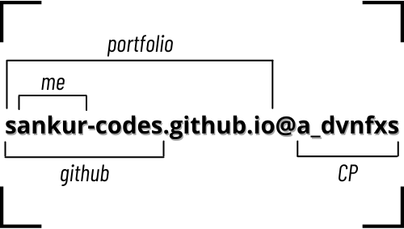

Senior Site Reliability Engineer at Red Hat, building resilient cloud infrastructure at scale. Speaker, open source contributor, and community advocate.
Designing cloud-native systems and architectures, building robust CI/CD pipelines, and implementing automated deployment strategies for scalable, containerized applications.
Developing and maintaining distributed managed services on cloud platforms, implementing comprehensive monitoring and alerting systems, and leading incident response with proactive reliability engineering practices.
Mentoring engineering teams, driving technical strategy decisions, contributing to open-source projects, and sharing expertise through technical conferences and community workshops.
Engineer · Speaker · Open Source Contributor
As a Senior Site Reliability Engineer at Red Hat, I specialize in designing and maintaining large-scale, resilient cloud infrastructure systems. My passion for technology stems from its transformative power to solve complex problems and drive innovation at enterprise scale.
I bring extensive expertise in cloud-native technologies, container orchestration with Kubernetes, infrastructure automation, and comprehensive monitoring solutions. My experience spans across building robust CI/CD pipelines, implementing observability practices, and ensuring high availability for mission-critical applications. I'm also an active contributor to open-source projects and enjoy sharing knowledge through technical conferences and community engagement.
Tools and technologies I work with every day
Industry-recognized credentials validating my expertise
Linux Foundation · Dec 2023
Red Hat · Feb 2026
Sharing ideas, building connections, and growing through conferences, classrooms, and writing
CNCF
Connecting with the global cloud-native community and sharing learnings on Kubernetes reliability and SRE practices at the flagship CNCF conference.
View Talk DetailsLinux Foundation
Exchanging ideas on open source culture, community-driven development, and the real-world impact of collaborative engineering.
Red Hat / Fedora Community
Engaging with the Red Hat community through talks on DevOps, containers, and reliability engineering — learning as much as sharing.
View Talk DetailsCNCF Community
Building relationships with regional Kubernetes communities through hands-on workshops and collaborative technical discussions.
Universities & Institutions
Guest lecturing at universities on cloud computing, DevOps, and open source — mentoring the next generation of engineers and sparking curiosity.
View Sessionsalloftech.github.io
Writing in-depth articles on cloud infrastructure, Kubernetes, and SRE — turning hands-on experience into resources others can learn from.
Visit BlogContributing to projects that power the cloud-native ecosystem
Azure Red Hat OpenShift Resource Provider. Contributing to the managed OpenShift service on Azure, including operator logic and infrastructure automation.
View on GitHubA custom DNS implementation designed for Kubernetes environments, enabling flexible DNS resolution and service discovery within clusters.
View on GitHubKubernetes-native FinOps forecasting platform. Collects operational metrics, serves ML forecasting models, and generates actionable infrastructure recommendations as custom resources.
View on GitHubA comprehensive tutorial for setting up local Kubernetes environments, covering cluster bootstrapping, deployments, and essential configurations.
View on GitHub